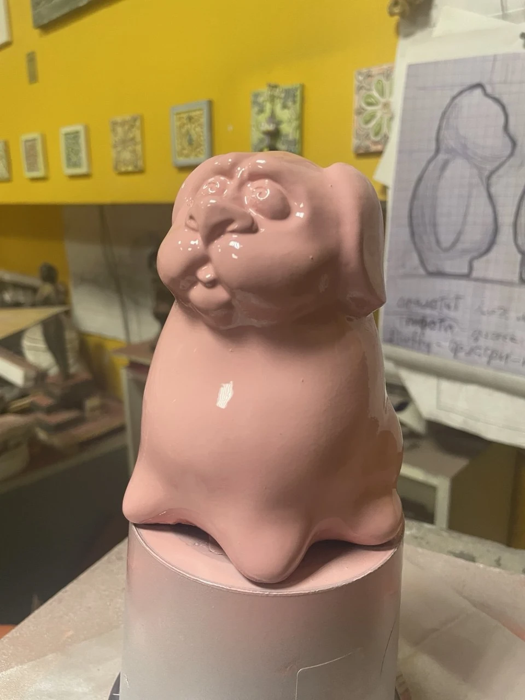

Скульптура
Розовый персонаж
Характер читается в пластике мордочки и мягком силуэте. Глянцевое розовое покрытие подчёркивает объём и делает скульптуру цельным акцентным предметом.
Авторский персонаж / Скульптура
Персональные роли участников в этом кейсе не уточнены.
Материалы проекта
2 фото · 0 видео. Видео запускается только вручную.

